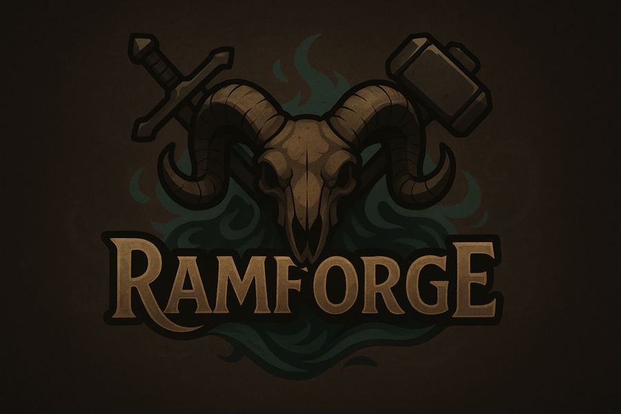

Le joueur incarne un jeune roi, contrôlé directement sur le terrain : déplacement à cheval, combat à distance à l'arc, et corps à corps à l'épée au contact de l'ennemi.
En posant un château, le roi obtient immédiatement trois ouvriers, qui permettent de construire différents bâtiments et de développer progressivement le domaine.
Le but du jeu : résister aux vagues envoyées par une armée de morts-vivants, puis vaincre le roi qui la commande.